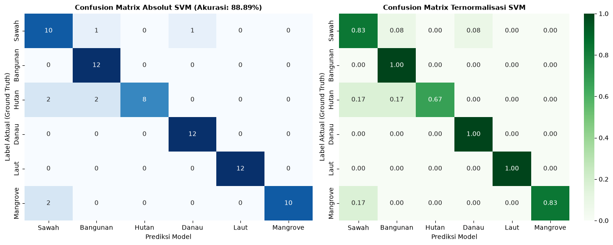

04. Modeling & Evaluasi: Support Vector Machine (SVM)#
Pelatihan Model Tunggal SVM (StandardScaler + SVC RBF)#
Notebook ini memuat data output/df_poligon_split.csv, membangun Pipeline Machine Learning tunggal:
$\(\text{Pipeline} = \text{StandardScaler}() + \text{SVC}(\text{kernel}='rbf', C=10, \gamma='scale', \text{probability}=True, \text{random\_state}=42)\)$
Melatih model pada 285 poligon latih, mengevaluasi pada 72 poligon uji, menghitung akurasi, Macro F1, Weighted F1, Confusion Matrix, Classification Report, dan menyimpan model ke output/model_svm.joblib serta hasil prediksi ke output/df_poligon_pred_svm.csv.
import os
import sys
from pathlib import Path
import pandas as pd
import numpy as np
import matplotlib.pyplot as plt
import seaborn as sns
import joblib
from sklearn.pipeline import Pipeline
from sklearn.preprocessing import StandardScaler
from sklearn.svm import SVC
from sklearn.metrics import accuracy_score, f1_score, classification_report, confusion_matrix
BASE_DIR = Path.cwd()
OUT_DIR = BASE_DIR / "output"
OUT_DIR.mkdir(parents=True, exist_ok=True)
SPLIT_FILE = OUT_DIR / "df_poligon_split.csv"
if not SPLIT_FILE.exists():
raise FileNotFoundError(
f"File {SPLIT_FILE} tidak ditemukan! Jalankan notebook '03_data_preparation.ipynb' terlebih dahulu."
)
print(f"Memuat data poligon dari: {SPLIT_FILE}")
df_poligon = pd.read_csv(SPLIT_FILE)
print(f"Data termuat: {len(df_poligon)} poligon")
Memuat data poligon dari: D:\tugas psd\website-jupyterbook\UTS\output\df_poligon_split.csv
Data termuat: 357 poligon
1. Persiapan Matriks Fitur dan Target Latih-Uji#
FITUR_SPEKTRAL = ['B02', 'B03', 'B04', 'B08', 'B11', 'NDVI', 'NDWI', 'MNDWI', 'NDBI']
label_names = ['Sawah', 'Bangunan', 'Hutan', 'Danau', 'Laut', 'Mangrove']
train_mask = df_poligon['split'] == 'Train'
test_mask = df_poligon['split'] == 'Test'
X_train = df_poligon.loc[train_mask, FITUR_SPEKTRAL]
y_train = df_poligon.loc[train_mask, 'label']
X_test = df_poligon.loc[test_mask, FITUR_SPEKTRAL]
y_test = df_poligon.loc[test_mask, 'label']
print(f"X_train: {X_train.shape}, y_train: {y_train.shape}")
print(f"X_test : {X_test.shape}, y_test : {y_test.shape}")
X_train: (285, 9), y_train: (285,)
X_test : (72, 9), y_test : (72,)
2. Inisialisasi dan Pelatihan Pipeline SVM#
Menggunakan parameter terstandarisasi:
Scaler:
StandardScaler()Classifier:
SVC(kernel='rbf', C=10, gamma='scale', probability=True, random_state=42)
model_pipeline = Pipeline([
('scaler', StandardScaler()),
('svm', SVC(kernel='rbf', C=10, gamma='scale', probability=True, random_state=42))
])
print("Melatih pipeline SVM...")
model_pipeline.fit(X_train, y_train)
print("Pelatihan selesai!")
# Menyimpan model terlatih ke output/model_svm.joblib
berkas_model = OUT_DIR / "model_svm.joblib"
joblib.dump(model_pipeline, berkas_model)
print(f"Model SVM tersimpan di: {berkas_model.resolve()}")
Melatih pipeline SVM...
Pelatihan selesai!
Model SVM tersimpan di: D:\tugas psd\website-jupyterbook\UTS\output\model_svm.joblib
D:\tugas psd\website-jupyterbook\.venv\Lib\site-packages\sklearn\svm\_base.py:239: FutureWarning: The `probability` parameter was deprecated in 1.9 and will be removed in version 1.11. Use `CalibratedClassifierCV(SVC(), ensemble=False)` instead of `SVC(probability=True)`
warnings.warn(
3. Evaluasi Kinerja Model pada Data Uji#
# Prediksi pada data latih dan uji
y_train_pred = model_pipeline.predict(X_train)
y_test_pred = model_pipeline.predict(X_test)
acc_train = accuracy_score(y_train, y_train_pred) * 100
acc_test = accuracy_score(y_test, y_test_pred) * 100
f1_macro = f1_score(y_test, y_test_pred, average='macro')
f1_weighted = f1_score(y_test, y_test_pred, average='weighted')
print("="*50)
print(f"Akurasi Data Latih (Train) : {acc_train:.2f}%")
print(f"Akurasi Data Uji (Test) : {acc_test:.2f}%")
print(f"Macro F1-Score (Test) : {f1_macro:.4f}")
print(f"Weighted F1-Score (Test) : {f1_weighted:.4f}")
print("="*50)
# Classification Report
target_names_eval = [f"{i}: {name}" for i, name in enumerate(label_names, 1)]
report_str = classification_report(y_test, y_test_pred, target_names=target_names_eval, digits=4)
print("\n=== CLASSIFICATION REPORT DATA UJI ===")
print(report_str)
# Menyimpan classification report ke text
with open(OUT_DIR / "04_classification_report.txt", "w", encoding="utf-8") as f:
f.write(report_str)
==================================================
Akurasi Data Latih (Train) : 91.93%
Akurasi Data Uji (Test) : 88.89%
Macro F1-Score (Test) : 0.8879
Weighted F1-Score (Test) : 0.8879
==================================================
=== CLASSIFICATION REPORT DATA UJI ===
precision recall f1-score support
1: Sawah 0.7143 0.8333 0.7692 12
2: Bangunan 0.8000 1.0000 0.8889 12
3: Hutan 1.0000 0.6667 0.8000 12
4: Danau 0.9231 1.0000 0.9600 12
5: Laut 1.0000 1.0000 1.0000 12
6: Mangrove 1.0000 0.8333 0.9091 12
accuracy 0.8889 72
macro avg 0.9062 0.8889 0.8879 72
weighted avg 0.9062 0.8889 0.8879 72
4. Visualisasi Confusion Matrix Model SVM#
cm = confusion_matrix(y_test, y_test_pred, labels=[1, 2, 3, 4, 5, 6])
cm_norm = cm.astype('float') / cm.sum(axis=1)[:, np.newaxis]
fig, (ax1, ax2) = plt.subplots(1, 2, figsize=(14, 5.5))
sns.heatmap(cm, annot=True, fmt='d', cmap='Blues', xticklabels=label_names, yticklabels=label_names, ax=ax1, cbar=False)
ax1.set_title(f'Confusion Matrix Absolut SVM (Akurasi: {acc_test:.2f}%)', fontsize=11, fontweight='bold')
ax1.set_xlabel('Prediksi Model', fontsize=10)
ax1.set_ylabel('Label Aktual (Ground Truth)', fontsize=10)
sns.heatmap(cm_norm, annot=True, fmt='.2f', cmap='Greens', xticklabels=label_names, yticklabels=label_names, ax=ax2)
ax2.set_title('Confusion Matrix Ternormalisasi SVM', fontsize=11, fontweight='bold')
ax2.set_xlabel('Prediksi Model', fontsize=10)
ax2.set_ylabel('Label Aktual (Ground Truth)', fontsize=10)
plt.tight_layout()
berkas_cm = OUT_DIR / "04_confusion_matrix_svm.png"
plt.savefig(berkas_cm, dpi=200)
plt.show()
print(f"Grafik confusion matrix tersimpan di: {berkas_cm}")

Grafik confusion matrix tersimpan di: D:\tugas psd\website-jupyterbook\UTS\output\04_confusion_matrix_svm.png
5. Menyimpan Hasil Prediksi Seluruh Poligon#
Menambahkan kolom pred_svm, pred_svm_teks, dan benar ke dalam dataframe poligon, lalu mengekspor ke output/df_poligon_pred_svm.csv.
label_map = {1: 'Sawah', 2: 'Bangunan', 3: 'Hutan', 4: 'Danau', 5: 'Laut', 6: 'Mangrove'}
# Prediksi untuk seluruh 357 poligon
X_all = df_poligon[FITUR_SPEKTRAL]
df_poligon['pred_svm'] = model_pipeline.predict(X_all)
df_poligon['pred_svm_teks'] = df_poligon['pred_svm'].map(label_map)
df_poligon['benar'] = (df_poligon['label'] == df_poligon['pred_svm'])
# Probabilitas prediksi (confidence)
proba = model_pipeline.predict_proba(X_all)
df_poligon['confidence'] = proba.max(axis=1)
berkas_pred = OUT_DIR / "df_poligon_pred_svm.csv"
df_poligon.to_csv(berkas_pred, index=False)
print(f"Data prediksi poligon tersimpan di: {berkas_pred.resolve()}")
# Evaluasi subset data uji
uji_benar = df_poligon[df_poligon['split'] == 'Test']['benar'].value_counts()
print("\nRingkasan Prediksi Data Uji (72 poligon):")
print(uji_benar)
print("\n=== DAFTAR BERKAS KELUARAN NOTEBOOK 04 ===")
for f in [berkas_model, berkas_pred, berkas_cm, OUT_DIR / "04_classification_report.txt"]:
print(f"- {f.name} ({f.stat().st_size:,} bytes)")
Data prediksi poligon tersimpan di: D:\tugas psd\website-jupyterbook\UTS\output\df_poligon_pred_svm.csv
Ringkasan Prediksi Data Uji (72 poligon):
benar
True 64
False 8
Name: count, dtype: int64
=== DAFTAR BERKAS KELUARAN NOTEBOOK 04 ===
- model_svm.joblib (28,421 bytes)
- df_poligon_pred_svm.csv (93,182 bytes)
- 04_confusion_matrix_svm.png (151,250 bytes)
- 04_classification_report.txt (554 bytes)